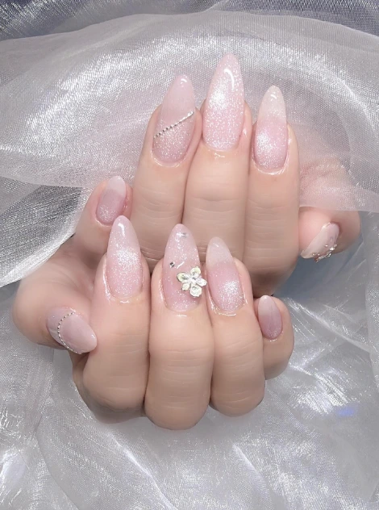

SERVICES
エステからネイル、目元、メンズ美容、ボディアートまで。気になるカテゴリーから、対応するサービスと店舗をご覧いただけます。
SERVICES / 施術カテゴリー
最初から全カテゴリーを表示しています。気になる施術を選ぶと、詳しい内容・対応サロン・予約先を確認できます。
痩身、小顔、フェイシャル、脱毛、バストケア
ワンカラー、マグネット、アート、フット
まつ毛パーマ、エクステ、眉スタイリング
フェイシャル、肌質ケア、痩身、脱毛、身だしなみ
約2週間楽しめるオーダーデザイン
DETAIL
各カテゴリーの詳細

ワンカラーからトレンドデザイン、フット、長さ出しまで。
フェイシャル、肌質ケア、痩身、脱毛、爪ケア、眉毛スタイリングまで。
約2週間楽しめる、オーダーデザインのボディアート。